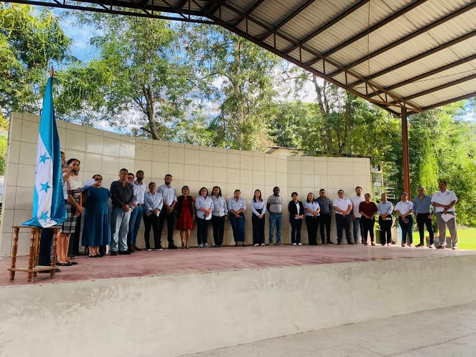

Nombre por confirmar
Responsable de la dirección general del Instituto Roberto Micheletti Baín.
Quiénes somos
Un equipo comprometido con la formación académica y técnica de cada estudiante, organizado por área para acompañar todo el recorrido del III Ciclo hasta el bachillerato.

Dirección y coordinación
A cargo de la administración general del instituto y del seguimiento académico de los distintos niveles y modalidades.
Responsable de la dirección general del Instituto Roberto Micheletti Baín.
Da seguimiento académico a los distintos grados, orientaciones y bachilleratos del instituto.
III Ciclo
Docentes a cargo de las materias generales de séptimo, octavo y noveno grado en modalidad básica.
Español, Educación Cívica, Estudios Sociales, Historia de Honduras, Sociología y Fundamentos de Psicología en 7°, 8° y 9°.
Matemáticas, Ciencias Naturales, Biología, Física y Química de 7° a 10°.
Inglés e Inglés Técnico de 7° a 11°, en ambos bachilleratos técnicos.
Educación Física, Artística y Tecnología en jornada matutina y vespertina.
Módulos Básicos, Rotativos u Ocupacionales de 7° a 9°. Hay 2 plazas vacantes en esta área (Ciencias Naturales y Módulos Básicos de 7°).
III Ciclo con orientación técnica
Encargados de los talleres prácticos que se cursan junto a las materias del III Ciclo.
A cargo del taller de Estructuras Metálicas.
A cargo del taller de Electricidad.
A cargo del taller de Corte y Confección.
Educación media
Docentes especializados en las materias técnicas y académicas de cada bachillerato.
Programación, Redes Informáticas, Desarrollo Web, Ofimática y Análisis y Diseño de Sistemas en 11° y 12° BTPI, jornada matutina y vespertina.
Contabilidad, Contabilidad de Costos, Contabilidad Bancaria, Auditoría, Matemática Financiera y Legislación Mercantil en 11° y 12° BTPCF.
Matemática, Física, Química, Biología, Historia Universal, Sociología, Filosofía, Antropología y Artística del Bachillerato en Ciencias y Humanidades, jornada vespertina.
Revisa la oferta académica completa o contáctanos para más información sobre cada área.